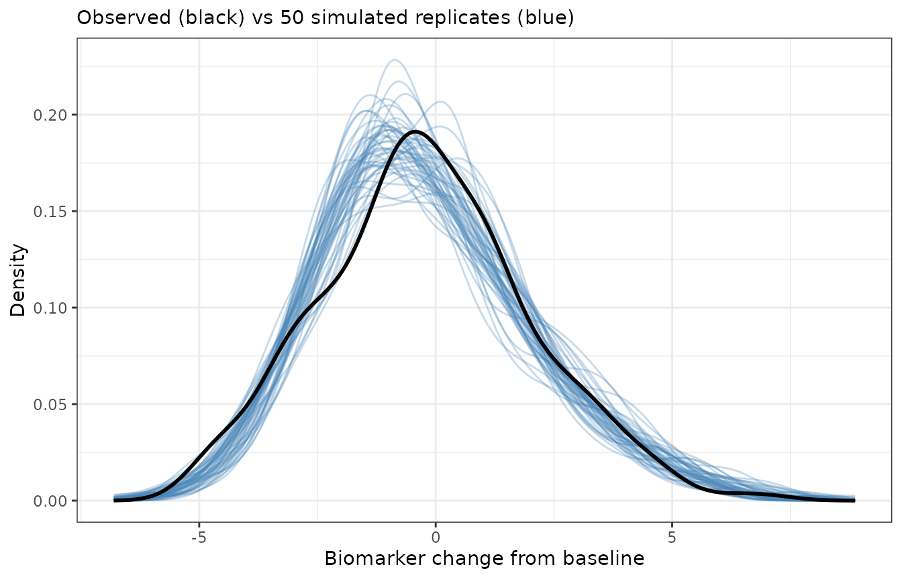
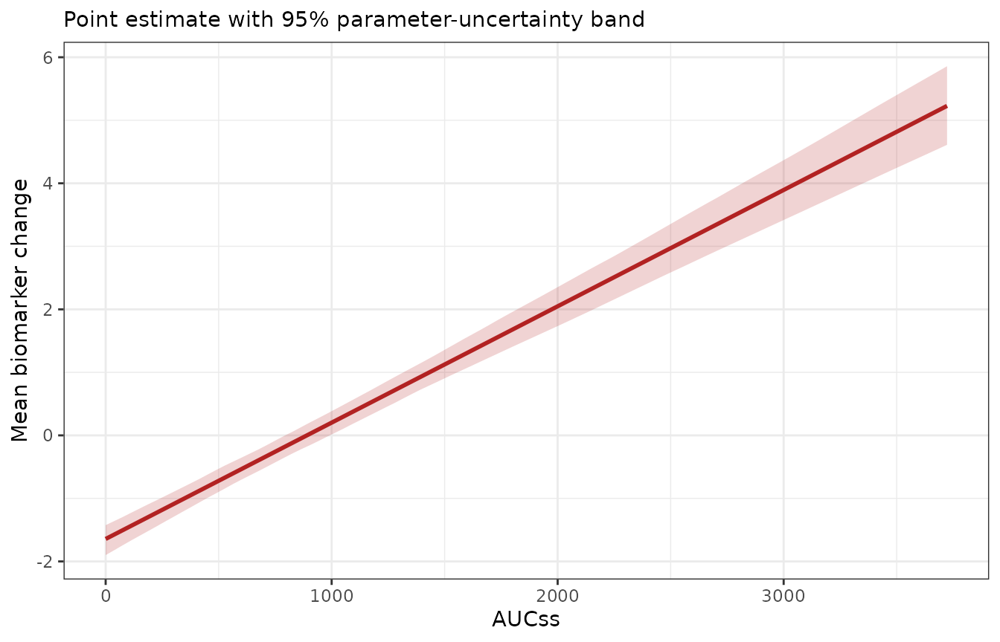

Once a model has been fitted, it’s often useful to generate new data from it: for predictive checks, for simulation-based intervals, or as the input to some downstream analysis. The package offers two tools for this, operating at different levels:
-
simulate()is the high-level method. It generates complete replicate datasets from a fitted model, automatically propagating both the uncertainty in the parameter estimates and the observation-level noise. -
erglm_fun()is the low-level building block. It extracts the deterministic prediction function from a fitted model, letting you evaluate it at any parameter values and any data you choose – the raw material for building custom simulations by hand.
Both rely on the mvtnorm package for drawing
parameter values, so it needs to be installed. This article works
through both tools using a gaussian model, then shows that they
generalise unchanged to the other glm() families erglm
supports.
mod <- erglm_model(biomarker_change ~ aucss, erglm_data, family = gaussian())The simulate() method
Calling simulate() generates one or more replicate
datasets. The number of replicates is set by nsim, and a
seed can be supplied for reproducibility:
sim1 <- simulate(mod, nsim = 1, seed = 1)
sim1
#> # A tibble: 300 × 7
#> dat_id sim_id mu val `coef_(Intercept)` coef_aucss aucss
#> <int> <int> <dbl> <dbl> <dbl> <dbl> <dbl>
#> 1 1 1 -0.437 -1.69 -1.72 0.00190 673.
#> 2 2 1 3.62 6.00 -1.72 0.00190 2806.
#> 3 3 1 -1.72 -1.22 -1.72 0.00190 0
#> 4 4 1 0.505 -0.722 -1.72 0.00190 1169.
#> 5 5 1 -0.999 -0.270 -1.72 0.00190 377.
#> 6 6 1 -1.09 0.00974 -1.72 0.00190 327.
#> 7 7 1 -1.72 -0.855 -1.72 0.00190 0
#> 8 8 1 0.579 0.122 -1.72 0.00190 1208.
#> 9 9 1 -1.72 0.545 -1.72 0.00190 0
#> 10 10 1 -1.23 -0.651 -1.72 0.00190 254.
#> # ℹ 290 more rowsWhat simulate() actually does
Generating a replicate involves two distinct sources of randomness,
and simulate() accounts for both:
-
Parameter uncertainty. A fresh parameter vector is
drawn from the multivariate normal distribution implied by the estimates
and their covariance matrix, using
coef(mod)andvcov(mod). This represents how uncertain we are about the fitted parameters themselves. -
Observation noise. Given that parameter draw, the
expected response
is evaluated at each observation’s exposure and covariates, and a
response is generated around it. The noise model is family-appropriate:
Bernoulli draws for
binomial, Poisson draws forpoisson, normal draws forgaussian(as here), and gamma draws forGamma.
Because both sources are included, the simulated val
column behaves like a genuine new dataset drawn from the fitted model,
not merely a noiseless prediction.
The output format
The result is a tidy, long-format tibble with
nsimnobs
rows:
names(sim1)
#> [1] "dat_id" "sim_id" "mu" "val"
#> [5] "coef_(Intercept)" "coef_aucss" "aucss"The columns are:
-
dat_id– an index identifying the original observation (row of the data). -
sim_id– which replicate the row belongs to (1tonsim). -
mu– the expected response (response scale) for that observation under the sampled parameters. -
val– the simulated response (the mean plus family-appropriate noise). - the sampled coefficient values, prefixed
coef_*(e.g.coef_`(Intercept)`,coef_aucss) to avoid colliding with predictor columns of the same name, repeated across all rows of a replicate – one parameter draw is used per replicate. - the model’s predictor columns (
aucss), carried along so you can group or plot by exposure and covariates.
Requesting several replicates stacks them, and the sampled coefficients vary from one replicate to the next while staying constant within a replicate:
sims <- simulate(mod, nsim = 50, seed = 1)
dim(sims)
#> [1] 15000 7
# one parameter draw per replicate
unique(sims[sims$sim_id <= 3, c("sim_id", "coef_(Intercept)", "coef_aucss")])
#> # A tibble: 3 × 3
#> sim_id `coef_(Intercept)` coef_aucss
#> <int> <dbl> <dbl>
#> 1 1 -1.72 0.00190
#> 2 2 -1.74 0.00202
#> 3 3 -1.61 0.00176A predictive check
A natural use of these replicates is a predictive check: if
the model is adequate, the distribution of simulated responses should
resemble the distribution of the observed response. Overlaying the
density of the observed biomarker_change on the densities
of several simulated replicates gives a quick visual check:
ggplot(sims, aes(val, group = sim_id)) +
geom_line(stat = "density", colour = "steelblue", alpha = 0.3) +
geom_line(
aes(biomarker_change),
data = erglm_data,
stat = "density",
inherit.aes = FALSE,
colour = "black",
linewidth = 1
) +
labs(
x = "Biomarker change from baseline",
y = "Density",
subtitle = "Observed (black) vs 50 simulated replicates (blue)"
)
The observed distribution sits comfortably within the spread of the simulated replicates, which is what we’d hope to see from a well-fitting model.
The erglm_fun() tool
Where simulate() bundles parameter sampling and noise
generation together, erglm_fun() exposes the deterministic
core: the prediction function itself. It returns a function of two
arguments, param and data, both of which
default to the values used when the model was fitted:
f <- erglm_fun(mod)
# with no arguments, it reproduces the fitted values
head(f())
#> [1] -0.4013 3.5360 -1.6437 0.5142 -0.9473 -1.0400
head(fitted(mod))
#> 1 2 3 4 5 6
#> -0.4013 3.5360 -1.6437 0.5142 -0.9473 -1.0400Because you control both arguments, you can evaluate the model in
situations the original fit never saw. Supplying param lets
you ask counterfactual “what if the parameters were different?”
questions – for example, setting the intercept to zero:
alt <- coef(mod)
alt["(Intercept)"] <- 0
head(f(param = alt))
#> [1] 1.2424 5.1797 0.0000 2.1579 0.6964 0.6037Supplying data lets you evaluate the curve at exposures
and covariate values of your choosing – for instance, tracing the
exposure-response relationship over a grid of aucss
values:
grid <- tibble(aucss = c(0, 1000, 2000, 3000, 4000))
f(data = grid)
#> [1] -1.6437 0.2022 2.0480 3.8939 5.7397By default erglm_fun() returns predictions on the
response scale (type = "response"); pass
type = "link" for the link scale.
Building a custom simulation
erglm_fun() is the tool to reach for when
simulate() doesn’t do exactly what you need and you want to
assemble the pieces yourself. As an illustration, we can build an
exposure-response curve with a parameter-uncertainty band by combining
erglm_fun() with a manual parameter draw – reproducing, at
a lower level, the parameter-sampling step that simulate()
performs internally.
The recipe is: draw many parameter vectors from the estimated sampling distribution, evaluate the curve over an exposure grid for each draw, and summarise the resulting family of curves pointwise.
set.seed(1)
n_draws <- 500
draws <- mvtnorm::rmvnorm(n_draws, mean = coef(mod), sigma = vcov(mod))
colnames(draws) <- names(coef(mod))
curve_grid <- tibble(aucss = seq(0, max(erglm_data$aucss), length.out = 100))
# evaluate the curve for every parameter draw
curves <- apply(draws, 1, function(p) f(data = curve_grid, param = p))
# summarise pointwise across draws
band <- tibble(
aucss = curve_grid$aucss,
fit = f(data = curve_grid),
lwr = apply(curves, 1, stats::quantile, probs = 0.025),
upr = apply(curves, 1, stats::quantile, probs = 0.975)
)
ggplot(band, aes(aucss)) +
geom_ribbon(aes(ymin = lwr, ymax = upr), fill = "firebrick", alpha = 0.2) +
geom_line(aes(y = fit), colour = "firebrick", linewidth = 1) +
labs(x = "AUCss", y = "Mean biomarker change", subtitle = "Point estimate with 95% parameter-uncertainty band")
This band reflects only parameter uncertainty, because we
summarised the mean curve and never added residual noise – it’s the
analogue of a confidence band. Adding a step that draws
rnorm(..., sd = sqrt(summary(mod)$dispersion)) around each
evaluated mean would turn it into a prediction band that also captures
observation noise, which is precisely the extra ingredient
simulate() supplies for you. This is the essential
trade-off between the two tools: simulate() is convenient
and complete, while erglm_fun() is transparent and fully
under your control.
The same tools across other glm() families
Both tools work unchanged for the other families erglm supports; only
the noise model and scale differ. For a binomial model, mu
is the fitted probability and val is a 0/1 outcome drawn
from
:
mod_b <- erglm_model(ae1 ~ aucss + sex, erglm_data, family = binomial())
sim_b <- simulate(mod_b, nsim = 2, seed = 1)
sort(unique(sim_b$val))
#> [1] 0 1
f_b <- erglm_fun(mod_b)
range(f_b())
#> [1] 0.1234 1.0000For a Poisson model, val is drawn from
and is always a non-negative integer:
mod_p <- erglm_model(ae_count ~ aucss + sex, erglm_data, family = poisson())
sim_p <- simulate(mod_p, nsim = 2, seed = 1)
all(sim_p$val == round(sim_p$val)) && all(sim_p$val >= 0)
#> [1] TRUEEverything else – custom parameter values, custom data grids, and building your own simulations on top of the prediction function – carries over exactly as in the gaussian case.
Visual predictive checks
For a VPC-style plot comparing observed and simulated response rates,
see the companion erplots package’s
er_vpc_plot(). Passing a fitted erglm model directly
(er_vpc_plot(data, ..., model = mod_b)) builds the
necessary simulated replicates internally via
erplots::er_simulate() – which erglm implements on top of
the same parameter-sampling/noise machinery simulate() uses
– so no separate erglm-side VPC helper is needed.
Notes
- Both
simulate()anderglm_fun()’s uncertainty workflows draw parameters with mvtnorm, which must be installed. -
simulate()captures two sources of variability (parameter uncertainty and observation noise); a band built fromerglm_fun()captures only whatever you choose to include, so decide deliberately whether you want a confidence-style band (means only) or a prediction-style band (means plus residual noise). - For a quick analytic interval on the mean, prefer
erglm_predict()orpredict(..., se.fit = TRUE), described in the modelling and methods articles. Reach forsimulate()anderglm_fun()when you need replicate datasets or bespoke simulation logic. - Other
glm()families are not currently supported bysimulate()and will raise an informative error rather than silently falling back to an expectation-only draw.